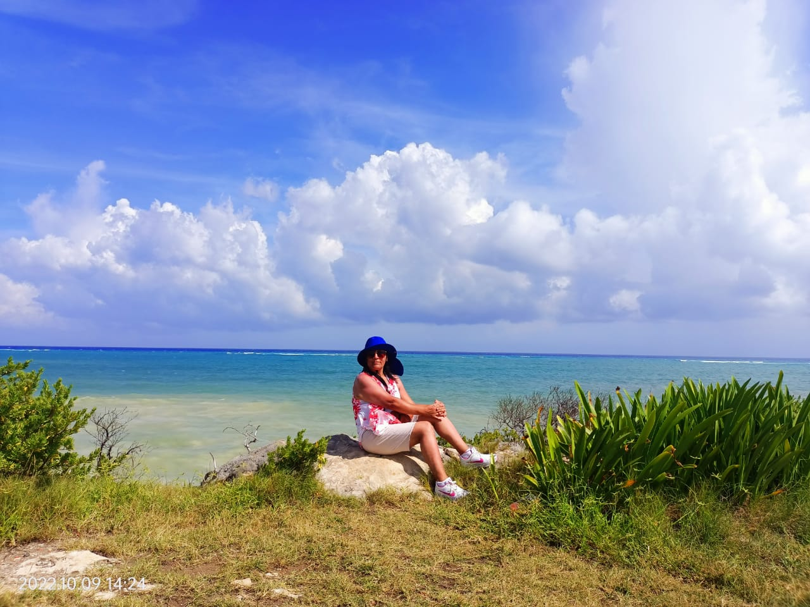
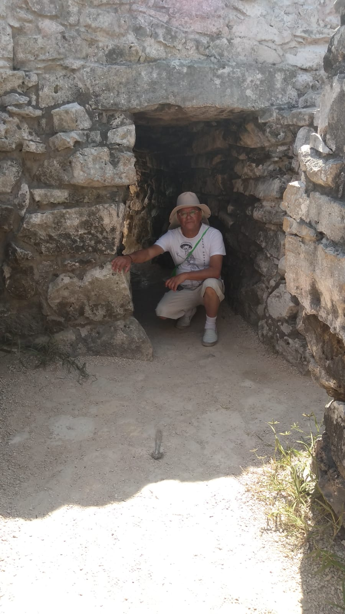
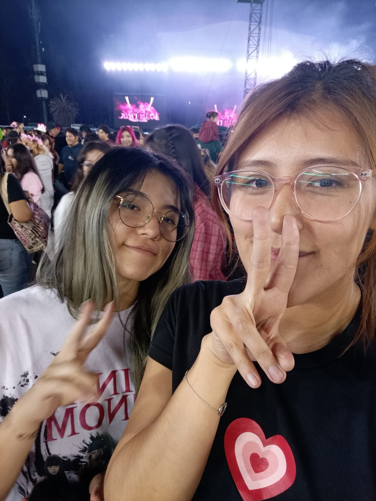

Julita García Torralba
Ella es mi mamá, nacida en Tehuacán, sin duda la mejor mamá que pude haber deseado, es super divertida, comprensiva, humilde y muy cariñosa. Todo mundo la ama.
Miguel Angel Bautista García
Él es mi papá, unos años más grande que mi mamá, pero ambos se ven super jovenes a la edad que tienen, de igual forma, es el mejor papá del mundo, de él he aprendido muchas cosas. Es muy trabajador y multiusos, muy comprensivo, siempre aprendiendo y mejorando.
Valeria Bautista García
Mi hermana mayor, tiene 26 años, la quiero mucho, compartimos la misma neurona, actualmente trabaja en Cánada, la extraño.
